HOW TO COMMUNICATE WITH YOUR CAT🐱
Scientists have discovered that cats have developed an elaborate communication system with hundreds of vocalizations to tell humans what they want or need. Developing an understanding of how your cat is communicating with you and how cats interpret human communication can help you cultivate a more nuanced relationship with your feline companion.
Reading Cat Body Language
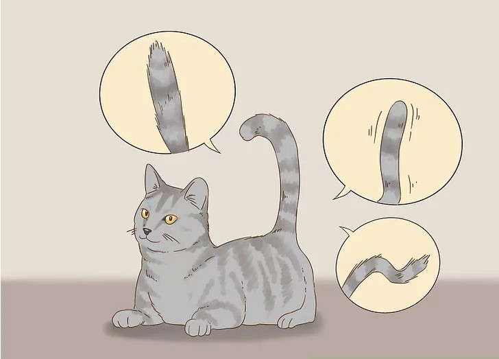
1. Watch Your Cat’s Tail
Like dogs, cats communicate with the positioning and movement of their tails. Knowing the signals of tail position in conjunction with vocalizations can help you understand the needs and wants of your cat. Some common tail positions include:
- Tail straight up with a curl at the end: This indicates happiness.
- Tail twitching: Your cat is excited or anxious.
- Fur on tail sticking up or bushy: Your cat is excited, playful, or feels threatened.
- Tail vibrating: The cat is very excited and happy to see you.
- Tail fur sticks straight up while the tail curls in the shape of an N: This is a sign of extreme aggression and may be present during fighting or self-defense.
- Tail fur sticks straight up but the tail is held low: Your cat feels aggressive or frightened.
- Tail held low and tucked under the rear: Your cat feels frightened.
- Tail around on you leg: you cat is greeting you
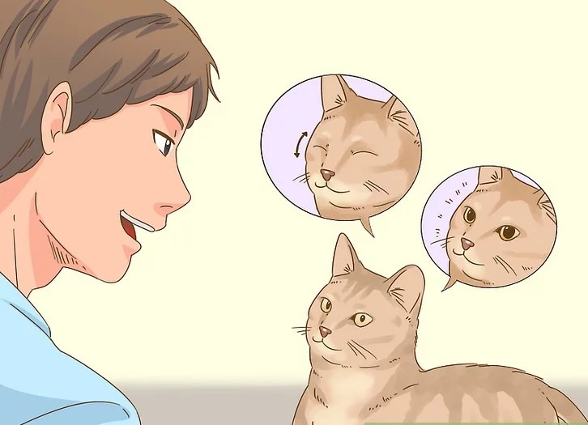
2. Look At Your Cat’s Eyes
Gazing into your cat’s eyes can help you bond with him/her and read his feelings. Be aware, however, that direct staring without blinking may be interpreted as a position of aggression that makes your cat uncomfortable.
- If your cat’s pupils are dilated, he/she is feeling either very playful or excited or quite fearful or aggressive; use other behavior cues to determine which it is.
- A cat staring into your eyes indicates that he/she trusts you and is comfortable around you.
- A cat slowly blinking his/her eyes may be showing affection, indicating the cat is comfortable with whoever might be around him/her.
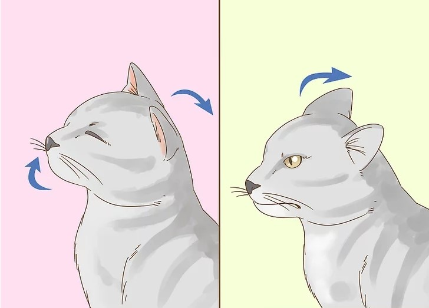
3. Notice Other Body Language
Since cats are more "fluent" than humans in body language, certain gestures will accompany vocalizations to reinforce their message.
- A cat lifting her nose and tilting his/her head back slightly is saying "I acknowledge you." Cats sitting in windows may greet you in this manner as you walk by.
- A cat may lay his/her ears back if he/she feels fear, anxiety, or playfulness. This may also be seen when cautiously sniffing something he/she wants to know more about.
- A cat who flicks his/her tongue out slightly and licks his/her lower lip is showing that he/she is worried or apprehensive.
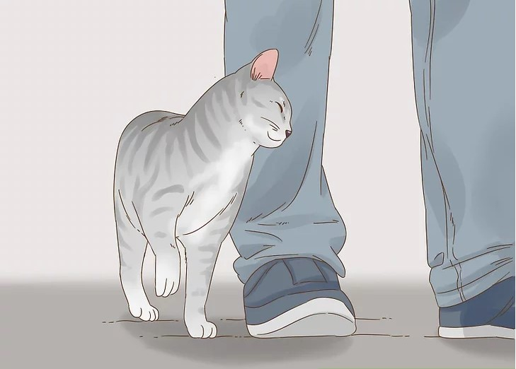
4. Identify Communicative Behaviors
Some of a cat’s communication with you is based on how he/she behaves when he/she is around you. Certain behaviors have consistent meaning among most cats.
- A cat rubbing against you is marking you as his/her property.
- A wet nose "kiss" is an affectionate feline gesture in which the cat taps his/her wet nose to you. This means that he/she likes and feels comfortable around you.
- A cat rubbing his/her head, flank and tail against a person or animal is showing an act of greeting.
- Playful head-butting is a show of friendliness and affection.
- Cats will sniff a person’s face to confirm his/her identity based on the familiarity of the smell.
- A cat will rhythmically knead with his/her paws, alternating between the right and left feet, as a sign of happiness, contentment, or playfulness. Kneading is an indication that your cat knows and trusts you.
- A cat licking you is showing the ultimate sign of trust. Your cat may consider you to be a part of his/her family, like a mother cleaning her kittens.
- If your cat tries to eat your hair, he/she may be trying to "groom" you. This means your cat really loves you and trusts you.
- Some cats will show they really love you by copying what you do. You can test this by playing dead on the floor. The cat may sniff or nudge you, then play dead too.
- If your cat bites you with little force, it is a warning for you to leave him/her alone.
Communicating With Your Cat
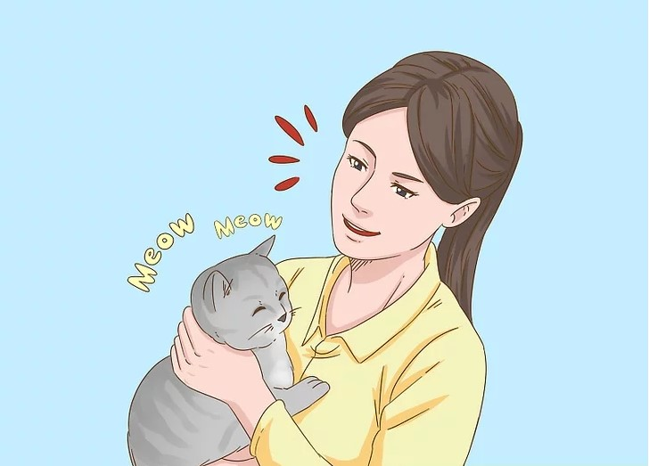
1. Talk Back To Your Cat
Cats are always learning how to communicate with us. The more that you communicate with your cat, the faster he or she will learn.
- Use a slightly raised tone of voice to indicate friendliness and a lowered tone of voice to indicate displeasure or aggression.
- Using repetition will help your cat learn to anticipate consistent activities. You may want to repeat a word such as sleep or bed each time you go to bed. Eventually, your cat will begin to associate the repetitive word sound with your actions and may even get to the bedroom before you.
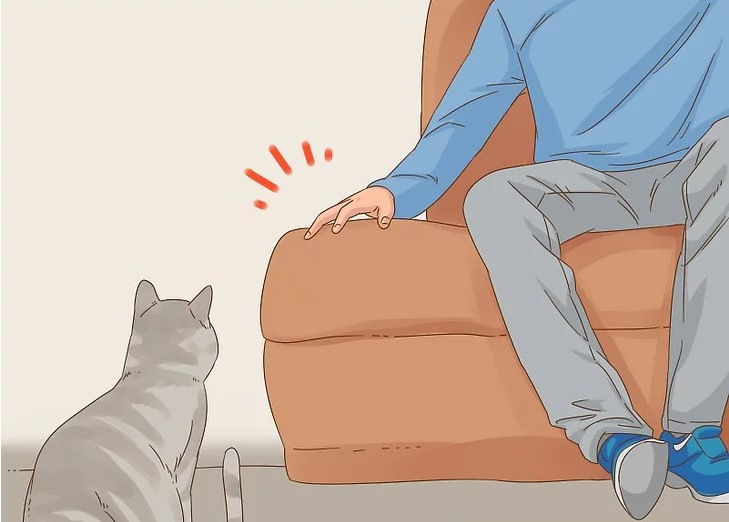
2. Use Nonverbal Communication Cues
Cats can be trained to understand words, but they will instinctively understand nonverbal cues. Creating a warm environment with clear expectations and few surprises can help strengthen your initial bond with a new cat.
- If you blink slowly when making eye contact with your cat, she will usually respond by coming over to be stroked. This is seen as a very non-threatening gesture.
- Try not to stare directly into a cat’s eyes. It tells her that you're unfriendly or aggressive.
- If your cat wants to go somewhere such as next to you on the couch, but he seems unsure, pat the space and use a soft, reassuring voice to invite him to join you.
- Be consistent in your intent and expression. A common blunder many pet owners make is to say "no" but pet the cat at the same time. This is very confusing to the cat. So for example, if you want your cat to go away, a firm "later" and a gentle push, without showing affection, will let the cat know that her presence is not desired at this time. Most cats will try two to three times to invade a person's space, often from different directions. When saying "Later", be patient.
- Never yell at or physically discipline a cat. This only frightens and angers the cat, and is counterproductive. Instead, to show displeasure, you can add a hard edge to your voice. The cat will pick up on that and sense unhappiness.
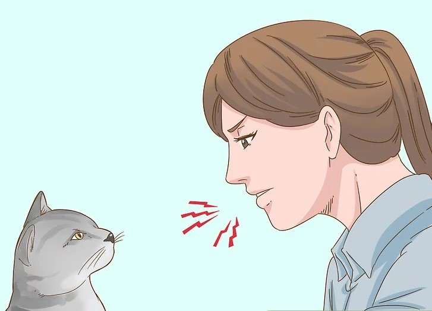
3. Deliver Commands To Your Cat
Being consistent with the wording, tone, and other accompanying signals while giving your cat training commands will help both of you agree on and understand clear expectations.
- Develop a commanding tone to use with your cat when he or she is doing something that you consider to be wrong. Use a voice that comes naturally to you and can be replicated easily, but that is also distinct from your everyday talking voice. If you use this voice sparingly but seriously, your cat will learn to associate the voice with the idea that she is displeasing you.
- Make a quick and sharp hiss or spit sound as a "no" command. This is similar to the sound made as a correction or warning in “cat language” and using it can communicate your intent more clearly to your cat.
- With patience, cats can be trained to respond to commands, much the same as for dogs. You can even teach your cat to shake your hand.
Listening To Your Cat
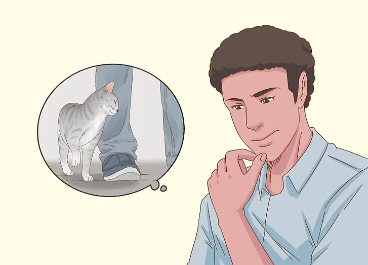
1. Understand How And Why Cats Communicate
Vocalizing is generally not your cat's preferred mode of communication. A cat's "first language" consists of a complex system of scent, facial expression, complex body language, and touch. Cats soon realize that we don't understand the non-verbal signals they send to each other, so they vocalize in an attempt to communicate in our language. By observing which sounds elicit which actions from us, a cat is always learning how to make requests or demands.
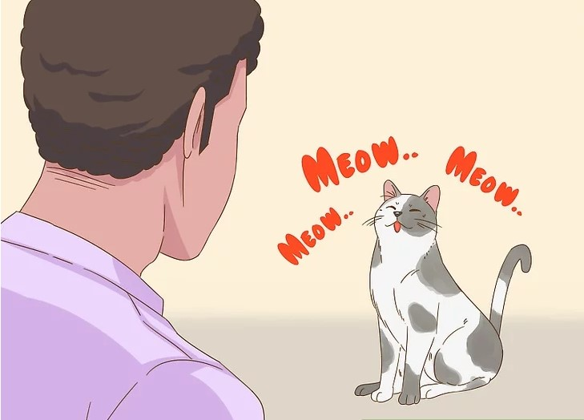
2. Observe Meowing Circumstances
If you watch what your cat is doing when he or she meows, you may be able to distinguish which meows are associated with which requests (or protests). While specific meows can vary from cat to cat, there are certain types of meows that are usually associated with specific cat emotions, such as purring or hissing.
- The short meow is used as a standard greeting and general acknowledgment.
- Multiple meows indicate excited greetings. You may notice a more enthusiastic greeting with increased meowing if you have been gone for a longer period of time than usual.
- A mid-pitched meow may indicate a plea for something like food or water.
- A longer, drawn-out "mrrroooow" is a more persistent demand for a need or want.
- A low-pitched "MRRRooooowww" indicates a complaint, displeasure, or preparation to fight.
- A loud, lower than mid-pitch "Meow" often signals more urgent begging for something such as food.
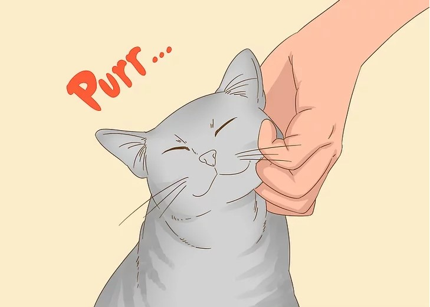
3. Identify Common Non-Meowing Cat Communication
While meowing is the sound that we most often associate with cat vocalization, cats make other common sounds as well.
- Purring, a throaty vibrating sound, invites close contact or attention. While cats can purr for a variety of reasons, purring is most commonly associated with easy contentment.
- Hissing is a cat’s clearest sign of aggression or self-defense. It indicates that your cat is very unhappy, feels threatened or frightened, or is fighting or preparing to fight.
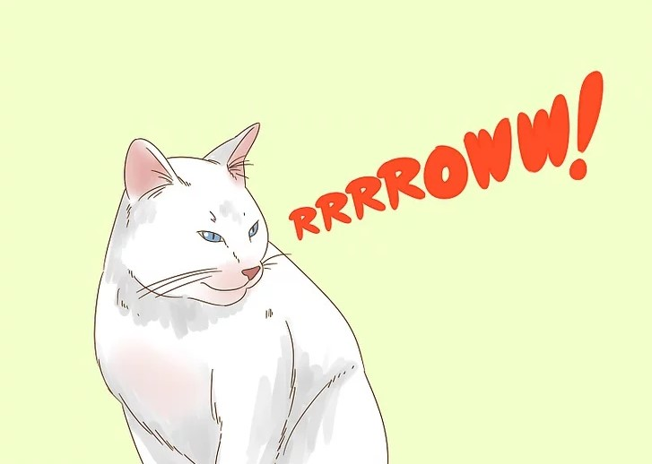
4. Notice Other Specialized Vocalizations
While other types of vocalizations may be rarer than meowing, hissing, and purring, understanding them can help you interpret your cat’s communications more fully.
- A high-pitch RRRROWW! often indicates anger, pain, or feeling fearful.
- A chattering sound can be a sign of excitement, anxiety, or frustration.
- A chirrup, a cross between a meow and a purr with a rising inflection, is a friendly greeting sound, often used by a mother cat to call to her kittens
- A loud yelping or “reeeowwwing” sound may indicate sudden pain, as when you accidentally step on your cat’s tail.